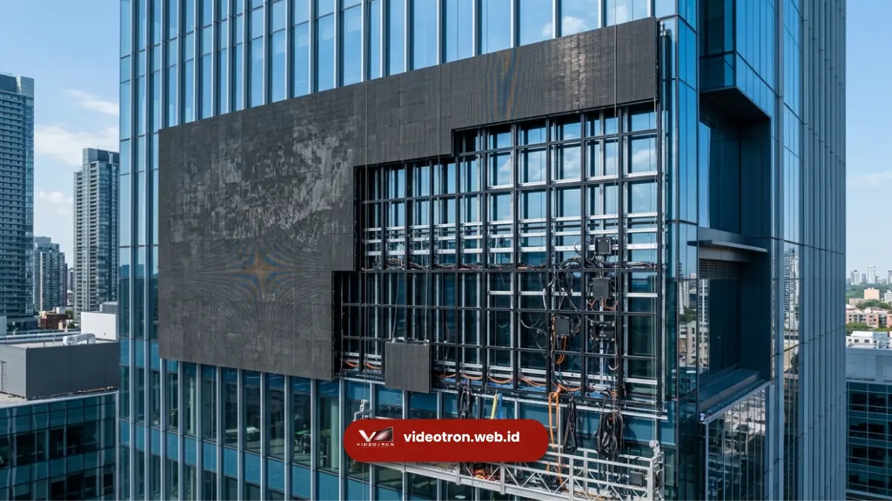

Proses design videotron custom mencakup konsultasi kebutuhan, survei lokasi, perancangan visual, produksi panel, hingga instalasi dan pengujian akhir. Setiap tahapan berperan penting agar hasil videotron sesuai dengan tujuan komunikasi dan anggaran korporat.
- Konsultasi kebutuhan menjadi titik awal seluruh proses design videotron.
- Survei lokasi menentukan ukuran, sudut pandang, dan jarak baca ideal.
- Simulasi visual membantu memastikan tata letak konten sesuai identitas brand.
- Produksi dan instalasi panel dilakukan sesuai spesifikasi yang disepakati.
- Pengujian akhir memastikan kualitas gambar dan kecerahan sesuai standar.
Tahap Konsultasi Kebutuhan Videotron
Tahap konsultasi kebutuhan videotron bertujuan memahami tujuan penggunaan, lokasi pemasangan, serta anggaran yang tersedia dari pihak korporat.
Pada tahap ini, tim teknis biasanya menggali informasi mengenai jenis konten yang akan ditampilkan, target audiens, dan durasi penggunaan videotron.
Informasi yang disampaikan secara detail pada tahap ini akan membantu tim merancang spesifikasi videotron yang lebih sesuai dengan kebutuhan aktual, sehingga mengurangi risiko revisi besar di tahap selanjutnya.
Survei Lokasi Pemasangan Videotron
Survei lokasi dilakukan untuk mengukur dimensi area, mengevaluasi struktur bangunan, serta menentukan sudut pandang dan jarak baca ideal audiens terhadap videotron. Tahap ini juga mencakup pengecekan kondisi pencahayaan sekitar lokasi, terutama untuk videotron outdoor.
Evaluasi Struktur dan Titik Pemasangan
Evaluasi struktur bangunan penting dilakukan untuk memastikan area pemasangan mampu menopang beban panel videotron secara aman. Tim teknis biasanya turut mempertimbangkan akses kabel, sumber daya listrik, serta kemudahan perawatan videotron di masa mendatang.
Analisis Jarak Pandang Audiens
Jarak pandang audiens menjadi acuan utama dalam menentukan ukuran layar dan pixel pitch yang tepat. Analisis ini memastikan konten videotron tetap terbaca jelas oleh audiens yang melintas maupun yang berada dalam jarak tertentu dari lokasi pemasangan.
Perancangan Visual dan Simulasi Konten
Setelah data kebutuhan dan lokasi terkumpul, tahap selanjutnya adalah perancangan visual, termasuk simulasi bagaimana konten korporat akan tampil pada videotron.
Simulasi ini membantu pihak korporat membayangkan hasil akhir sebelum proses produksi dimulai.
Perancangan visual pada tahap ini turut mempertimbangkan konsistensi warna, tipografi, dan elemen branding lain agar videotron benar-benar mencerminkan identitas perusahaan.

Simulasi desain videotron korporat yang memvisualisasikan tampilan konten sebelum proses produksi.Produksi dan Perakitan Panel LED
Produksi panel LED dilakukan sesuai spesifikasi teknis yang telah disepakati, termasuk ukuran modul, pixel pitch, dan tingkat kecerahan. Tahap ini juga mencakup pengujian kualitas komponen sebelum panel dikirim ke lokasi instalasi.
Ketelitian pada tahap produksi sangat memengaruhi daya tahan videotron dalam jangka panjang, terutama untuk unit yang akan dipasang di area outdoor dengan paparan cuaca langsung.
Instalasi Videotron di Lokasi
Instalasi videotron dilakukan oleh tim teknis dengan memasang struktur penyangga, merangkai panel modular, serta menghubungkan sistem kabel dan kontrol. Proses ini membutuhkan ketelitian tinggi agar susunan panel rata dan tampilan visual tidak terganggu oleh celah antar modul.
Durasi instalasi bervariasi tergantung skala proyek, kompleksitas lokasi, serta ketersediaan akses di area pemasangan.
Pengujian Akhir dan Serah Terima
Setelah instalasi selesai, dilakukan pengujian akhir untuk memastikan kualitas gambar, kecerahan, serta fungsi sistem kontrol berjalan sesuai standar.
Tahap ini juga mencakup pelatihan singkat kepada pihak korporat mengenai cara mengoperasikan dan memperbarui konten videotron.
Mengapa Memilih Proses Design Videotron yang Terstruktur
Proses design videotron yang terstruktur membantu memastikan hasil akhir sesuai ekspektasi, meminimalkan risiko kesalahan teknis, serta mengoptimalkan anggaran yang telah dialokasikan korporat untuk proyek videotron.
Bagi perusahaan yang ingin memulai proses design videotron custom sesuai kebutuhan, tim vendorvideotron.web.id siap mendampingi mulai dari tahap konsultasi hingga instalasi selesai.
Proses design videotron custom melibatkan tahapan konsultasi, survei lokasi, perancangan visual, produksi, instalasi, hingga pengujian akhir.
Mulai konsultasikan kebutuhan videotron korporat Anda bersama vendorvideotron.web.id untuk mendapatkan proses pengerjaan yang terstruktur dan sesuai target.

Hawa Nadira
LED Technology Consultant dan Visual Educator
Konsultan dan spesialis solusi display digital berdedikasi tinggi yang fokus membagikan panduan edukatif mengenai penerapan teknologi layar LED videotron untuk kebutuhan interior modern di Indonesia.